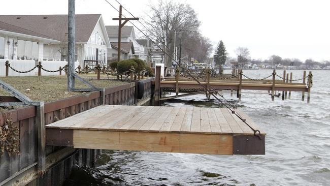

The Fog
Yeah, this seems both an obvious and a not-so-obvious "sight". The appearance of fog around Toluca Lake is a very common occurance (and not just during Fog Festival)! But we truly believe that is it something out of this world and that it offers a spiritual experience like no other!
Town Hall
Built sometime around the start of the 19th century (the exact date was mysteriously lost), the Toluca Lake Town Hall stands proudly as a testament to the town's history and to the people that have lived hear for so many years. Visit it to learn about prominent residents, past and present, the rich and often dark history of the town, and to join up with one of our daily tours!

Old Docks
Ever since the infamous sinking of the Little Baroness, the Toluca Lake Docks have gradually lost the interest of the townspeople. A replacement tour boat was never acquired and fish disappeared altogether within weeks of the accident. Nevertheless, recent efforts by the Historical Society has resulted in the docks being restored to tip-top shape. Give them a visit!